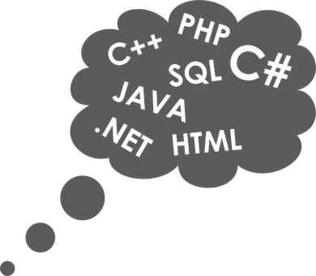
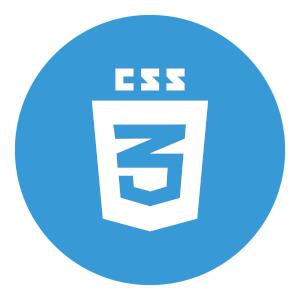
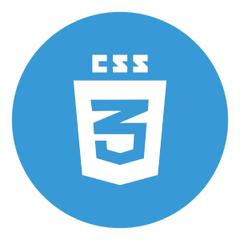

Yan Cruz De Freitas
 

| Nacionalidade | Brasileiro |
| Estado Civil | Solteiro |
| Idade | 23 anos |
| Estado | Rio de Janeiro |
| Contatos | |
| 22 99995-8598 | |
| 22 99701-4204 | |
| yan_100@hotmail.com.br |
RESUMO
• Possuo um bom conhecimento na linguagem python, ferramenta que utilizei em projetos pessoais e projetos em grupo durante a faculdade, onde adquiri experiência com ferramentas como Pandas e Matplotlib para uso de tratamento de dados e também Django para programação web.
• Também durante o período da faculdade, juntamente com cursos extracurriculares pude obter um sólido conhecimento nos bancos de dados relacionais e não relacionais tendo a oportunidade de utilizá-los na criação de APIs.
• Também tive a oportunidade de lidar com tecnologias para aplicação no lado do cliente(Front End) como HTML, CSS e JavaScript, tendo utilizado destas ferramentas para realizar alguns trabalhos de free lance na criação de pequenos sites.
FORMAÇÃO ACADÊMICA
• Análise e Desenvolvimento de Sistemas - Universidade Estácio de Sá
CURSOS ADICIONAIS
• Certificação em fundamentos scrum – SCRUMstudy • Programação em python do básico ao avançado – Udemy • Python for data science and machine learning bootcamp - Udemy • Using python for research - Edx • Deep learning: Advanced Computer Vision - Udemy • Curso Completo de Banco de Dados SQL e NoSQL: Essencial - Udemy
IDIOMAS
Inglês - nível avançado